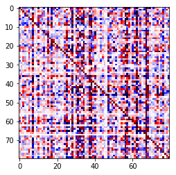

In [1]:
from scipy.linalg import solve
from scipy.special import erf as erf
import matplotlib.pyplot as plt
import numpy as np
import pandas as pd
import multiprocessing as mp
import os, pickle
import sklearn
from sklearn.metrics import auc as sklearn_auc
data_dir = '../../../../data/vim2/'
In [2]:
# max number of st/00 st/01 .. chunks to use
max_i = 9
# person
subject = 1
# seconds offset between movie and brain data
lag = 1
# maximum number of voxels to use
max_voxels = 100
# fraction of data that is training
train_frac = 0.8
train_folds = 4
train_fold = 1
object_to_infer = 'person'
# load movie data
movie_data = ['' for _ in range(max_i)]
for i in range(max_i):
objects_file = os.path.join(data_dir, 'st', '%02i_objects_py2.pkl' % (i, ))
with open(objects_file, 'rb') as f:
movie_data[i] = pickle.load(f)
objects = [d for l in movie_data for d in l]
unique_objects = np.unique([k for d in objects for k in d])
n_frames = len(objects)
n_unique_objects = unique_objects.shape[0]
object_index = dict(zip(unique_objects, range(n_unique_objects)))
confidence = np.zeros((n_unique_objects, n_frames))
for frame, d in enumerate(objects):
for o, c in d.iteritems():
confidence[object_index[o], frame] = c
barcode = ~np.isclose(confidence, 0)
order = np.argsort(barcode.sum(1))[::-1]
confidence = confidence[order]
barcode = barcode[order]
unique_objects = unique_objects[order]
object_index = dict(zip(unique_objects, range(n_unique_objects)))
objects_to_infer_idx = [object_index[o] for o in objects_to_infer]
# load brain data
brain_data = [
np.load(
os.path.join(data_dir, 'subject_%i' % (subject, ), 'rt', '%02i.npy' % (
i, ))) for i in range(max_i)
]
brain_data = np.hstack(brain_data)
complete_vox = np.isclose(np.isnan(brain_data).sum(1), 0)
brain_data = brain_data[complete_vox]
vox_idx = np.random.choice(brain_data.shape[0],
size=min(brain_data.shape[0], max_voxels),
replace=False)
In [3]:
objects_data = confidence[objects_to_infer_idx]
objects_data = np.stack([o.mean(1) for o in np.split(objects_data, n_frames / 15, axis=1)]).T
objects_data = np.roll(objects_data, lag)
brain_data = brain_data[vox_idx]
x = np.vstack((objects_data, brain_data))
t = range(x.shape[1])
x = x[:, lag:]
t = t[lag:]
x -= x.mean(1)[:,np.newaxis]
split = int(x.shape[1] * train_frac)
x_train, x_test = x[:, :split], x[:, split:]
t_train, t_test = t[:split], t[split:]
x_train1, x_train2 = x_train[:, :-1], x_train[:, 1:]
t_train1, t_train2 = t_train[:-1], t_train[1:]
x_test1, x_test2 = x_test[:, :-1], x_test[:, 1:]
t_test1, t_test2 = t_test[:-1], t_test[1:]
In [4]:
fig = plt.figure(figsize=(14,12))
ax = plt.gca()
ax.imshow(barcode, cmap='Greys', aspect='auto')
ax.set_yticks(range(n_unique_objects))
ax.set_yticklabels(unique_objects)
ax.set_xlabel('frame')
plt.show()

In [5]:
# n, T = 20, int(1e4)
n, tn = x_train.shape
dt = 1.
l = np.int(np.ceil(tn / dt))
sqrt_dt = np.sqrt(dt)
sqrt_2 = np.sqrt(2)
rat = sqrt_dt / sqrt_2
sign_dx = np.sign(np.diff(x_train))
mean_x = x_train.mean(1)
cov_x = np.cov(x_train)
x_train1_mean0 = x_train1 - mean_x[:, np.newaxis]
def fit(i, iters=100):
wi = np.zeros(n)
wi[i] = 1
# erf_last = erf(x1[i] * rat) + 1
erf_last = erf(x_train1[i]) + 1
e = []
for it in range(iters):
h = wi.dot(x_train1)
erf_next = erf(h)
ei = np.linalg.norm(erf_next - erf_last)
e.append(ei)
if ei * ei < 1e-8:
break
erf_last = erf_next.copy()
h *= -sign_dx[i] / erf_next
wi = solve(cov_x, x_train1_mean0.dot(h) / (l - 1))
return wi, e[1:]
def predict(i, x):
return x[i] + w[i, n_objects_to_infer:].dot(x[n_objects_to_infer:])
pool = mp.Pool(processes=mp.cpu_count())
res = pool.map(fit, range(n_objects_to_infer))
pool.close()
pool.terminate()
pool.join()
In [6]:
w = np.empty((n_objects_to_infer, n))
w = np.vstack([r[0] for r in res]) / rat
e = [r[1] for r in res]
fig = plt.figure(figsize=(3,3))
ax = plt.gca()
for ei in e:
ax.plot(ei, 'k-')
plt.show()

In [7]:
x_train2_prediction = np.vstack([predict(i, x_train1) for i in range(n_objects_to_infer)])
x_test2_prediction = np.vstack([predict(i, x_test1) for i in range(n_objects_to_infer)])
x_train2_prediction -= x_train2_prediction.mean(1)[:, np.newaxis]
x_train2_prediction /= x_train2_prediction.max(1)[:, np.newaxis]
x_train2_prediction[x_train2_prediction < 0] = 0
x_test2_prediction -= x_test2_prediction.mean(1)[:, np.newaxis]
x_test2_prediction /= x_test2_prediction.max(1)[:, np.newaxis]
x_test2_prediction[x_test2_prediction < 0] = 0
x[:n_objects_to_infer] -= x[:n_objects_to_infer].min(1)[:,np.newaxis]
x[:n_objects_to_infer] /= x[:n_objects_to_infer].max(1)[:,np.newaxis]
fig, ax = plt.subplots(n_objects_to_infer, 1, figsize=(14, n_objects_to_infer))
for i in range(n_objects_to_infer):
ax[i].plot(t_train2, x_train2_prediction[i], 'b-', t_test2, x_test2_prediction[i], 'r-', alpha=0.5)
ax[i].plot(t, x[i], 'k-', alpha=0.5)
ax[i].set_ylabel(objects_to_infer[i])
plt.show()

In [8]:
def roc(x, x_prediction, threshold=0.5, n_threshold=500):
tpr = np.empty((n_objects_to_infer, n_threshold))
fpr = np.empty((n_objects_to_infer, n_threshold))
for i, thr in enumerate(np.linspace(0, 1, n_threshold)):
positives = x > threshold
negatives = ~positives
predicted_positives = x_prediction >= thr
predicted_negatives = ~predicted_positives
true_positives = positives & predicted_positives
false_positives = negatives & predicted_positives
true_negatives = negatives & predicted_negatives
false_negatives = negatives & predicted_positives
tpr[:,i] = true_positives.sum(1) / positives.sum(1).astype(float)
fpr[:,i] = false_positives.sum(1) / negatives.sum(1).astype(float)
auc = np.array([sklearn_auc(fpr[i], tpr[i]) for i in range(n_objects_to_infer)])
return fpr, tpr, auc
fig, ax = plt.subplots(1, 3, figsize=(15, 5))
train_fpr, train_tpr, train_auc = roc(x_train2[:n_objects_to_infer], x_train2_prediction)
ax[0].plot(train_fpr.T, train_tpr.T)
test_fpr, test_tpr, test_auc = roc(x_test2[:n_objects_to_infer], x_test2_prediction)
ax[1].plot(test_fpr.T, test_tpr.T)
for i in range(n_objects_to_infer):
ax[2].scatter(train_auc[i], test_auc[i], label=objects_to_infer[i])
ax[0].set_title('training')
ax[1].set_title('testing')
for a in ax[:2]:
a.set_ylabel('true positive rate')
a.set_xlabel('false positive rate')
ax[2].set_xlabel('training ROC AUC')
ax[2].set_ylabel('testing ROC AUC')
plt.tight_layout()
plt.show()
/usr/lib/python2.7/site-packages/ipykernel_launcher.py:20: RuntimeWarning: invalid value encountered in divide

In [9]:
data = np.stack((train_auc, test_auc))
pd.DataFrame(index=objects_to_infer, data=data.T, columns=['train AUC', 'test AUC'])
Out[9]:
| train AUC | test AUC | |
|---|---|---|
| banana | 0.828691 | NaN |
| train | 0.852044 | 0.956681 |
| orange | 0.862561 | 0.944444 |
| couch | 0.701029 | 0.809931 |
| donut | 0.825353 | 0.768055 |
| surfboard | 0.547766 | 0.825800 |
| traffic light | 0.850615 | 0.769124 |
| knife | 0.681230 | 0.245828 |
| dog | 0.844016 | 0.791725 |
| vase | 0.894424 | 0.990264 |
| hot dog | 0.910581 | NaN |
| zebra | 0.933554 | 0.955649 |
| bed | 0.796365 | 0.821445 |
| skis | 0.743602 | 0.943324 |
| airplane | 0.923711 | 0.856214 |
| tennis racket | 0.502954 | NaN |
| potted plant | 0.899894 | 0.903225 |
| bicycle | 0.514924 | 0.254868 |
| motorcycle | 0.970192 | 0.255563 |
| cow | 0.902163 | 0.940849 |
| clock | 0.769934 | 0.807531 |
| backpack | 0.758532 | NaN |
| cake | 0.841832 | 0.990947 |
| tie | 0.720980 | 0.867354 |
| frisbee | 0.753287 | NaN |
| refrigerator | NaN | 0.673050 |
| laptop | 0.669573 | 0.627349 |
| fire hydrant | 0.888048 | NaN |
| spoon | 0.563712 | 0.689183 |
| kite | 0.852332 | 0.941880 |
| ... | ... | ... |
| bench | NaN | 0.910017 |
| carrot | 0.963167 | 0.989554 |
| elephant | 0.888967 | 0.994437 |
| boat | 0.816132 | NaN |
| wine glass | 0.700637 | 0.983352 |
| bear | 0.908229 | 0.999305 |
| microwave | 0.258773 | NaN |
| toilet | 0.871548 | NaN |
| apple | 0.846611 | NaN |
| umbrella | 0.873476 | 0.876541 |
| sports ball | NaN | 0.876832 |
| handbag | 0.802290 | 0.770877 |
| hair drier | 0.452788 | 0.253477 |
| dining table | 0.611637 | 0.695846 |
| baseball bat | 0.832193 | 0.992350 |
| chair | 0.678552 | 0.823989 |
| truck | 0.644769 | 0.549722 |
| toaster | 0.255862 | NaN |
| toothbrush | 0.477074 | 0.652295 |
| teddy bear | 0.951970 | 0.997387 |
| car | 0.848383 | 0.871938 |
| broccoli | 0.840098 | 0.997213 |
| mouse | 0.986987 | 0.820584 |
| oven | 0.770878 | NaN |
| cell phone | 0.872924 | 1.000000 |
| remote | 0.942410 | 0.983658 |
| sink | 0.581080 | NaN |
| horse | 0.911227 | 0.629610 |
| bus | 0.819912 | 0.870706 |
| bottle | 0.892208 | 0.992266 |
80 rows × 2 columns
In [10]:
plt.imshow(w[:80,:80], cmap='seismic', vmin=-1, vmax=1)
plt.show()
w[:80,:80].min(), w[:80,:80].max()

Out[10]:
(-174.8725029019912, 75.17526315270185)
In [11]:
[unique_objects[i] for i in np.squeeze(np.argwhere(np.isclose((confidence > 0.5).sum(1), 0)))]
Out[11]:
[u'dining table', u'hair drier', u'toaster']